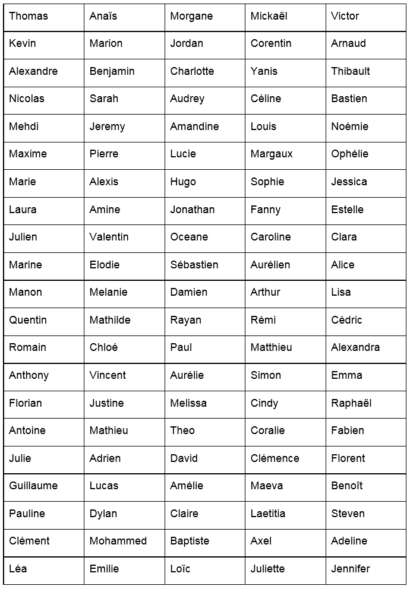
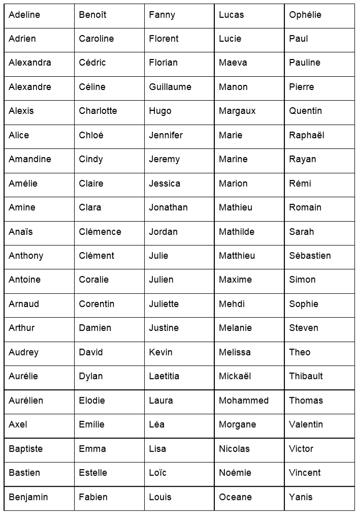

4.5 Recherche dichotomique⚓︎
ou comment rechercher efficacement dans une liste triée ?


«recherche dichotomique» se dit en anglais binary search.
Mise en situation⚓︎
Voici une première liste de prénoms. Votre mission est très simple : regardez la liste, et chronométrez le temps qu'il vous faut pour dire si votre prénom est dans la liste ou pas.
N'hésitez vraiment pas à jouer le jeu ! Trouvez un moyen de vous chronométrer, car il va servir à nouveau ensuite.
 Vous avez mesuré votre temps ? Alors notez le quelque part et recommencez avec la liste suivante (cette fois, les prénoms sont triés par ordre alphabétique).
Voici une deuxième liste de prénoms. Même mission !

Vos deux temps sont-ils les mêmes ?
Visionnez cette vidéo :⚓︎
Voici le lien du notebook associé.
1. Introduction : recherche d'une valeur dans une liste⚓︎
1.1 Préambule : liste non triée⚓︎
Exemple : pouvez-vous deviner la couleur à laquelle je pense ?
coul = ["bleu", "jaune", "rouge", "vert", "violet", "marron"]
Toutes les méthodes (proposition des valeurs dans l'ordre, au hasard, dans l'ordre inverse...) sont équivalentes car la liste n'est pas triée.
 Dans toute la suite, nous rechercherons un élément dans une liste d'entiers triée dans l'ordre croissant.
Dans toute la suite, nous rechercherons un élément dans une liste d'entiers triée dans l'ordre croissant.
1.2 Contexte de recherche⚓︎
Considérons donc la liste lst suivante :

lst = [2, 3, 6, 7, 11, 14, 18, 19, 24]
L'objectif est de définir un algorithme de recherche efficace d'une valeur arbitraire présente dans cette liste.
1.3 Méthode naïve : recherche par balayage⚓︎
C'est la méthode la plus intuitive : on essaie toutes les valeurs (par exemple, dans l'ordre croissant) jusqu'à trouver la bonne.
Exercice 1
Écrire un code permettant d'afficher l'indice de la valeur 14 dans la liste lst = [2, 3, 6, 7, 11, 14, 18, 19, 24].
Proposez un jeu de tests.
Exercice 2
Écrire une fonction trouve(lst, val) qui renvoie l'indice d'une valeur val dans une liste lst. Si la valeur val n'est pas trouvée, on renverra "non trouvé".
Proposez un jeu de tests.
1.3 Complexité de la méthode naïve⚓︎
Complexité de la méthode naïve 
Dans le cas d'une recherche naïve, le nombre (maximal) d'opérations nécessaires est proportionnel à la taille de la liste à étudier. Si on appelle \(n\) la longueur de la liste, on dit que cet algorithme est d'ordre \(n\), ou linéaire, ou en \(O(n)\).
Remarque : La méthode naïve n'utilise pas le fait que la liste est triée, on aurait pu aussi bien l'utiliser sur une liste non triée.
2. Recherche dichotomique⚓︎
2.1 Introduction : le jeu du «devine un nombre entre 1 et 100»⚓︎
Règles du jeu
Si je choisis un nombre entre 1 et 100, quelle est la stratégie optimale pour deviner ce nombre le plus vite possible ?
(à chaque étape, une indication (trop grand, trop petit) permet d'affiner la proposition suivante)
Réponse attendue :
La stratégie optimale est de diviser en deux à chaque étape l'intervalle d'étude. On démarre de 50, puis 75 ou 25, etc. On appelle cela une méthode par dichotomie, du grec ancien διχοτομία, dikhotomia (« division en deux parties »).
La méthode de dichotomie fait partie des méthodes dites «diviser pour régner».
2.2 Algorithme de recherche dichotomique⚓︎
Dichotomie, déroulement intuitif
- on se place au milieu de la liste.
- on regarde si la valeur sur laquelle on est placée est égale à la valeur cherchée.
- si c'est le cas on a trouvé.
- sinon on regarde si la valeur sur laquelle on est placée est inférieure ou supérieure à la valeur cherchée.
- on ne considère maintenant que la bonne moitié de la liste qui nous intéresse.
- on continue jusqu'à trouver la valeur cherchée (ou pas).
2.3 Programmation de la méthode de dichotomie⚓︎
Comprendre la méthode de dichotomie est relativement simple, mais savoir la programmer est plus difficile.
Pour des raisons d'efficacité, nous allons garder intacte notre liste de travail et simplement faire évoluer les indices qui déterminent le début et la fin de notre liste.
Une autre méthode pourrait être d'extraire à chaque étape une nouvelle liste (dont on espère qu'elle contient la valeur cherchée), mais la technique utilisée (le slicing de liste) consomme beaucoup trop de ressources.
Nous allons donc travailler avec trois variables :
indice_debut(en bleu sur le schéma)indice_fin(en bleu sur le schéma)indice_milieu, qui est égale à(indice_debut + indice_fin) // 2(en rouge sur le schéma)
Dans l'illustration suivante, la valeur recherchée est 14.

Nous allons faire se rapprocher les indices indice_debut et indice_fin tant que indice_debut <= indice_fin
Recherche dichotomique dans une liste triée
def recherche_dichotomique(lst, val) :
indice_debut = 0
indice_fin = len(lst) - 1
while indice_debut <= indice_fin :
indice_milieu = (indice_debut + indice_fin) // 2
if lst[indice_milieu] == val :
return indice_milieu
elif lst[indice_milieu] < val :
indice_debut = indice_milieu + 1
else :
indice_fin = indice_milieu - 1
return None
Utilisation
>>> mylist = [2, 3, 6, 7, 11, 14, 18, 19, 24]
>>> recherche_dichotomique(mylist, 14)
5
>>> recherche_dichotomique(mylist, 2)
0
>>> recherche_dichotomique(mylist, 24)
8
>>> recherche_dichotomique(mylist, 1977)
None
>>>
2.4 Visualisations avec PythonTutor⚓︎
Cas où la valeur est trouvée
Cas où la valeur N'est PAS trouvée
2.5 Terminaison de l'algorithme⚓︎
Est-on sûr que l'algorithme va se terminer ?
La boucle while qui est utilisée doit nous inciter à la prudence (voir cours sur la boucle While).
Il y a en effet le risque de rentrer dans une boucle infinie.
Pourquoi n'est-ce pas le cas ?
Aide : observer la position des deux flèches bleues lors de l'exécution de l'algorithme
La condition de la boucle while est indice_debut <= indice_fin, qui pourrait aussi s'écrire indice_fin >= indice_debut.
Au démarrage de la boucle, on a :
indice_debut = 0
indice_fin = len(lst) - 1
Ceci qui nous assure donc de bien rentrer dans la boucle.
Ensuite, à chaque étape, les deux variables indice_debut et indice_fin vont se rapprocher jusqu'à ce que le programme rencontre un return ou bien jusqu'à ce que indice_fin devienne inférieur à indice_debut.
Ceci nous assure donc que le programme va bien se terminer.
Variant de boucle
On dit que la valeur indice_fin - indice_debut représente le variant de boucle de cet algorithme.
Ce variant est un nombre entier, d'abord strictement positif, puis qui va décroître jusqu'à la valeur 0.
2.6 Complexité de l'algorithme⚓︎
Combien d'étapes (au maximum) sont-elles nécessaires pour arriver à la fin de l'algorithme ?
Imaginons que la liste initiale possède 8 valeurs.
Après une étape, il ne reste que 4 valeurs à traiter.
Puis 2 valeurs.
Puis une seule valeur.
Il y a donc 3 étapes avant de trouver la valeur cherchée.
Exercice
- Remplissez le tableau ci-dessous :
| taille de la liste | 1 | 2 | 4 | 8 | 16 | 32 | 64 | 128 | 256 |
|---|---|---|---|---|---|---|---|---|---|
| nombre d'étapes | _ | _ | _ | 3 | _ | _ | _ | _ | _ |
- Pouvez-vous deviner le nombre d'étapes nécessaires pour une liste de 4096 termes ?
- Pour une liste de \(2^n\) termes, quel est le nombre d'étapes ?
Conclusion :
C'est le nombre de puissances de 2 que contient le nombre \(N\) de termes de la liste qui est déterminant dans la complexité de l'algorithme.
Ce nombre s'appelle le logarithme de base 2 et se note \(\log_2(N)\).
On dit que l'algorithme de dichotomie a une vitesse logarithmique. On le note \(O(\log_2(n))\).
Complexité de la dichotomie
La recherche dichotomique a une complexité logarithmique.
Cette complexité est bien meilleure qu'une complexité linéaire. Le nombre d'opérations à effectuer est très peu sensible à la taille des données d'entrée, ce qui en fait un algorithme très efficace.
3. Expériences et comparaison des vitesses d'exécution⚓︎
Avec une liste contenant 100 000 valeurs⚓︎
L = [i for i in range(100000)]
Mesurons le temps nécessaire pour trouver l'indice de la dernière valeur de la liste (qui est 99999) avec la méthode de balayage (méthode 1) :
from timeit import timeit
timeit("trouve(L,99999)", globals=globals(), number= 100)
1.7849999999998545
Mesurons le temps nécessaire pour trouver l'indice de la dernière valeur de la liste (qui est 99999) avec la méthode par dichotomie (méthode 2) :
timeit("recherche_dichotomique(L,99999)", globals=globals(), number= 100)
0.0010000000002037268
Comparaison des deux méthodes : l'algorithme dichotomique est bien plus rapide que l'algorithme de balayage (la différence d'ordre de grandeur est de \(10^3\), qui correspond bien à l'ordre de grandeur de \(\frac{n}{\log_{2}(n)}\) lorsque \(n\) vaut \(10^5\)).
Avec une liste contenant 1 000 000 valeurs (soit 10 fois plus que la liste précédente)⚓︎
L = [i for i in range(1000000)]
Mesurons le temps nécessaire pour trouver l'indice de la dernière valeur de la liste (qui est 999999) avec la méthode de balayage (méthode 1) :
timeit("trouve(L,999999)", globals=globals(), number= 100)
15.88000000000011
Mesurons le temps nécessaire pour trouver l'indice de la dernière valeur de la liste (qui est 999999) avec la méthode par dichotomie (méthode 2) :
timeit("recherche_dichotomique(L,999999)", globals=globals(), number= 100)
0.001999999999497959
Comparaison des deux méthodes : l'algorithme dichotomique est toujours bien plus rapide que l'algorithme de balayage (la différence d'ordre de grandeur est de \(10^4\), qui correspond bien à l'ordre de grandeur de \(\frac{n}{\log_{2}(n)}\) lorsque \(n\) vaut \(10^6\)).
Influence de la taille de la liste sur la vitesse de chaque méthode :⚓︎
- méthode 1: la recherche dans une liste 10 fois plus grand prend environ 10 fois plus de temps : la vitesse de l'algorithme est bien proportionnelle à la taille \(n\) de la liste. \(\frac{10^6}{10^5} = 10\)
- méthode 2: la recherche dans une liste 10 fois plus grand prend environ 1,2 fois plus de temps : la vitesse de l'algorithme est bien proportionnelle au logarithme de la taille \(n\) de la liste. \(\frac{\log_{2}(1000000)}{\log_{2}(100000)} \approx 1,2\)
Remarque : Il ne faut toutefois pas oublier que la méthode dichotomique, bien plus rapide, nécessite que la liste ait été auparavant triée. Ce qui rajoute du temps de calcul ! (cf tri par insertion ou tri par sélection )